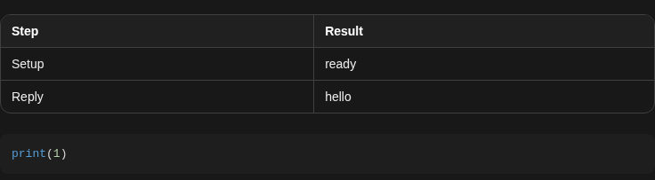

How to get to it
- Open any conversation: a sidebar conversation card, or the direct URL
/conversations/<id>. Leaving one for the home page: the sidebar's New Chat link; coming back: its card again. - Start one from the home composer (New Chat,
/): type and press Send.control-openhands conversation startdrives exactly this path. - An empty conversation: the sidebar's create-thread button (
conversation-panel-new-thread-picker), then No workspace (or a workspace). - Composer status control (right side of the composer): Stop while running, Play while stopped.
- Hover a bubble: Branch from here and Copy to clipboard icons; hover a tool title for its timestamp.
- Confirmation mode and the critic are switched on under Settings → Verification (
/settings/verification; the page itself belongs to the settings families).
Before you start
Start with the common launch and health checks, then follow this family’s preconditions in order. Recipes share the fixtures and state named below.
Preconditions:
- Baseline state (launched, doctored,
onboard --skipdone) andcontrol-openhands llm preset deepseek(deepseek-flash active). Every prompt below is tiny and stays in the conversation's own workspace. - Conversation ids are printed as
"id"bycontrol-openhands conversation start, or read fromcontrol-openhands browser url(/conversations/<id>).<id>below is always the conversation the step just created or opened. F06.llm-not-configured-bannerneeds a second, freshcontrol-openhands launch --new --build neverwith nollm preset(export its run dir asOH_VERIFY_RUNfor those commands, thencontrol-openhands stopit).F06.critic-resultis blocked: it needs a model and an OpenHands Cloud critic API key (Settings → Verification → Critic API Key); its bullet says what a scored run shows. The automatic-fetch half ofF06.load-older-history(its 16-command conversation) needs a model; the scroll-to-top half is driven without one, on the dummy profile below, with thirty refused user messages.F06.hook-eventsneeds a configured hook; none is set in a fresh run.F06.clock-skew-sendandF06.failed-send-persistsneed no model reply: a conversation that exists is enough (without a key the agent errors at once, and the user rows still land). Without a key, create the family's conversations with a dummy profile (QA_DUMMY_KEY=qa control-openhands llm set --profile qa-zeta --model openai/gpt-4o --api-key-env QA_DUMMY_KEY --no-validate) andcontrol-openhands conversation start --prompt ...without--wait.F06.corrective-nudgeis blocked: the nudge needs a model turn with neither text nor a tool call, which a normal prompt to deepseek-flash does not produce. When one happens,control-openhands browser count 'testid=corrective-nudge-message'is1andbrowser count 'testid=user-message >> has-text=Your last response did not include'is0.- The harness browser grants clipboard access:
control-openhands browser clipboardreads what a Copy button wrote andbrowser clipboard --write qa-emptyresets it first. - A terminal call can come back as "The terminal session was reset..." after this run's agent server restarts; the model reruns it, which turns one action into a group of two (see Gotchas).
Behavior inventory
35 stable behavior IDs and their expected behavior
F06.empty-state-suggestionsan empty conversation shows "Let's start building!" with four suggestion chips; a chip fills the composer with its prompt. Read recipe ↓F06.user-and-agent-messagesuser and agent bubbles; a long user message is clipped with a gradient and expands on click ("View More"). Read recipe ↓F06.message-copyhovering a bubble shows Copy to clipboard; it copies the message's markdown source and the label flips to Copied to clipboard for 2 s. Read recipe ↓F06.code-block-copyhovering a fenced code block in an agent reply shows its own Copy button, which copies only the code. Read recipe ↓F06.timestampshovering a bubble or tool title shows the event's local date and time. Read recipe ↓F06.pending-messagesa sent message shows "Sending..." until the server echoes it; a failed send shows Failed to send with Retry and Dismiss; Retry delivers it exactly once. Read recipe ↓F06.clock-skew-senda message sent while the browser clock runs ahead of the server is still confirmed by the server echo: no lingering "Sending..." and no Retry. Read recipe ↓F06.failed-send-persistsa failed send keeps its Retry row after the backend returns and after leaving and reopening the conversation from the sidebar; sending the same text again succeeds without clearing it, and Retry then delivers that attempt exactly once. Read recipe ↓F06.markdown-renderingagent replies render markdown: tables inside a horizontal scroller with edge fades, fenced code, inline code. Read recipe ↓F06.workspace-path-linksa workspace file path in an agent reply, and the path chip of a file-editor card, open that file in the Files tab. Read recipe ↓F06.thinkingmodel reasoning appears as a collapsed "Thinking" row that expands. Read recipe ↓F06.event-groupsconsecutive tool calls collapse into "N actions completed" (or "k/N actions completed" with a spinner while one is pending); expanding lists one titled row per action. Read recipe ↓F06.tool-visualizersexpanding a tool row shows a rich body: terminal command and output (non-zero exit badgeexit N), file-editor path chip and content. Read recipe ↓F06.markdown-file-previewwhen the agent creates a Markdown file, its row stays expanded and ungrouped and shows a rendered, height-limited preview card with the file name and View, which opens the file in the Files tab. Read recipe ↓F06.task-listtask-tracker calls render a "Tasks" card with done / todo icons. Read recipe ↓F06.events-matchthe stream shows one bubble per message event and one row per action, with no duplicates (compare withconversation events). Read recipe ↓F06.load-older-historyonly the newest 50 events load first; the previous 50 are fetched when the user scrolls the transcript to its top (a "Fetching older messages…" row shows until they arrive) and automatically when the content is too short to scroll, so the first prompt and all actions appear. Read recipe ↓F06.scroll-to-bottomscrolling up shows a scroll-to-bottom button; clicking it returns to the bottom and hides it. Read recipe ↓F06.live-activitywhile the agent runs, a chip above the composer names the current action ("Thinking", then the action title) and the composer status reads Running. Read recipe ↓F06.status-indicatorwhile a new conversation starts, a "Starting" pill shows above the composer. Read recipe ↓F06.stop-resumeStop in the composer interrupts the agent, including a running tool call (status Stopped, play button, an Agent error row for the interrupted call); Play resumes it to completion. Read recipe ↓F06.reload-mid-runreloading while the agent runs reattaches to the live run; it finishes without duplicated events. Read recipe ↓F06.reconnectwhen the Agent Server goes away the composer shows Disconnected; after it returns the page reconnects without a reload. Read recipe ↓F06.error-eventsa conversation error (ConversationErrorEvent) surfaces as a warning banner and the composer status Error. Read recipe ↓F06.confirmation-modewith confirmation mode on, a lock chip sits above the composer and each action waits for "Do you want to continue with this action?" with Cancel (⇧⌘⌫) and Continue (⌘↩). Read recipe ↓F06.confirmation-shortcutsCmd+Enter continues and Shift+Cmd+Backspace cancels a pending action. Read recipe ↓F06.branch-from-herehovering a message shows Branch from here; on an agent message it forks inclusively; on a user message it forks without that message and pre-fills its text in the new composer, ready to send. The branch is titled "<title> (branch)" and keeps working. Read recipe ↓F06.image-attachmentsimages sent with a message show as thumbnails in the bubble; expand opens a lightbox that closes with X or Escape. Read recipe ↓F06.critic-resultwith the critic enabled, agent messages and the finishing action each carry a "Critic: agent success likelihood" block (stars labelledScore: <N.N>%, one decimal, with the percentage beside them); Expand details lists the issue categories (Potential Issues, Infrastructure, Likely Follow-up). Read recipe ↓F06.hook-eventshook executions render as their own rows in the stream.F06.corrective-nudgewhen the model answers with neither a message nor a tool call, the SDK's nudge (Your last response did not include a function call or a message. …) shows as a muted, italicrole=noteline with an info icon (corrective-nudge-message), not as a user bubble (#17864).F06.phoneat 390 px the transcript fits the viewport; wide tables scroll inside their own container. Read recipe ↓
Readable recipes
Read each script from top to bottom. Code is copied from the map; prose gives the action, expected observation, and conditions. <id>, <run> and similar placeholders stand for values from your own run. Short forms such as browser count continue the same control-openhands invocation; they are kept as documented.
Expected observations describe the recipe’s contract. Captures below selected recipes show representative real states from this snapshot; they do not mark every mapped behavior as passed. Follow cleanup before moving to another family.
No recipes match. Try another word or a behavior ID.
One run that exercises the stream #
- Wait
control-openhands conversation start --prompt "Run the terminal command 'echo qa-f06-hello', then create a file qa_f06.txt containing the word hi. Finally reply with a markdown table with columns Step and Result (two rows) followed by a python code block that prints 1." --wait --timeout 300 - Check
control-openhands browser testids 'testid=chat-interface' - Check
control-openhands browser snapshot 'testid=agent-message' - ExpectThe testids include
user-message,event-group("3 actions completed"),agent-message,markdown-table-scrollwithmarkdown-table-scroll-fade-left/-right; the snapshot shows atablewith column headers Step and Result and acodeblockprint(1). - NoteCompare with
- Check
control-openhands conversation events <id> - Note: one user and one agent
MessageEvent, threeActionEvents (terminal,file_editor,canvas_ui_control), matching oneuser-message, one group of three rows and oneagent-message. - ExpectThe thinking row (
collapsible-thinking) lives inside the group, so it is listed only after the next bullet expands it.

Agent reply renders a two-row Step and Result table and a Python code block containing print(1).
Representative documentation capture, not a complete run of this recipe or family. Captured on an isolated local backend at desktop viewport using the current main checkout. A tiny no-tools prompt was used; the ActionEvent count was zero. Event groups and tool visualizers were not exercised. Doctor passed and pageErrors were zero. Error history contains GET /api/llm/balance 404 responses on this local backend; this is not a clean-errors claim.
How this screenshot was taken
canvas: 1.26.0 · agent server: 1.53.0 · sdk: 1.53.0 · automation: 1.19.0
OH_VERIFY_RUN="$OH_VERIFY_RUN" control-openhands fixture git-repo
OH_VERIFY_RUN="$OH_VERIFY_RUN" control-openhands conversation start --workspace qa-repo --prompt 'Reply with a markdown table with columns Step and Result and exactly two rows: Setup | ready, Reply | hello. Then a python code block containing print(1). Do not run any tools.' --wait --timeout 180
OH_VERIFY_RUN="$OH_VERIFY_RUN" control-openhands conversation events <conversation-id> --kinds ActionEvent --last 10
OH_VERIFY_RUN="$OH_VERIFY_RUN" control-openhands browser snapshot testid=agent-message
OH_VERIFY_RUN="$OH_VERIFY_RUN" control-openhands browser screenshot testid=agent-message --feature F06.markdown-rendering --name markdown-replyExpand a group and its rows #
- Do
control-openhands browser click 'testid=event-group-toggle'(label becomes Collapse actions),
- Check
control-openhands browser text 'testid=event-group'(three titles, e.g. "Echo test string in terminal", "Create qa_f06.txt containing hi"; titles are model-written), then
- Do
control-openhands browser click 'testid=event-group-content >> role=button[name="Expand"][exact] >> nth=0' - Notetwice (each click expands the next collapsed row).
- ExpectThe group text now contains
echo qa-f06-helloand its outputqa-f06-hello, the file path chip (testid=file-path-chip) and the contenthi. - Do
control-openhands browser click 'testid=collapsible-thinking-toggle >> nth=0' - Notereveals
collapsible-thinking-content. - NoteTake
- Do
control-openhands browser screenshot 'testid=chat-interface' --feature F06.tool-visualizers --name bash-and-file
Open files from the stream #
- NoteOn the same page the agent may already have opened the file; run
- Do
control-openhands browser click 'testid=file-quick-row-close-qa_f06.txt' - Noteand check
- Check
control-openhands browser count 'testid=file-quick-row-item-qa_f06.txt'is
0. - Do
control-openhands browser click 'testid=agent-message >> testid=markdown-file-path-link' - Note: the count is
1and - Check
control-openhands browser text 'testid=file-content-viewer-plain'is
hi. - NoteClose it again and
- Do
control-openhands browser click 'testid=file-path-chip'(inside the expanded file-editor row): the count is
1again.
Markdown file preview #
- Wait
control-openhands conversation start --prompt "Use the file_editor tool to create the file qa_notes.md containing a heading '# QA Notes' and one bullet '- first'. Do nothing else and reply DONE." --wait --timeout 150 - NoteWithout any click,
- Check
control-openhands browser text 'testid=markdown-file-preview'reads
QA Notes first qa_notes.md View(rendered heading and bullet, then the file name) andcount 'testid=event-group'is0. - Check
control-openhands browser count 'testid=file-quick-row-item-qa_notes.md'is
0; - Do
control-openhands browser click 'testid=markdown-file-preview-view' - Notemakes it
1and - Check
control-openhands browser text 'testid=file-content-viewer-markdown'reads
QA Notes first. - Do
control-openhands browser goto /conversations/<stream id> - Noteto return to the stream conversation for the next bullets.
Timestamps #
- Do
control-openhands browser tooltip 'testid=user-message' - Do
control-openhands browser tooltip 'testid=event-group-toggle' - ExpectBoth return the local date and time, e.g.
Oct 4, 2026, 11:08 PM.
Copy a message and a code block #
- NoteOn the same page run
- Check
control-openhands browser clipboard --write qa-empty - Do
control-openhands browser hover 'testid=agent-message >> nth=0' - Do
control-openhands browser click 'testid=agent-message >> nth=0 >> testid=copy-to-clipboard >> nth=0'(the bubble's button; the code block has a second, hidden
copy-to-clipboard). - Check
control-openhands browser attr 'testid=agent-message >> nth=0 >> testid=copy-to-clipboard >> nth=0' aria-labelis
Copied to clipboard, andCopy to clipboardagain about 2 s later; - Check
control-openhands browser clipboard - Notestarts with
| Step | Result |and ends with the fencedprint(1)block. - Do
control-openhands browser hover 'testid=agent-message >> pre' - Do
control-openhands browser click 'testid=agent-message >> pre >> testid=copy-to-clipboard' - Check
control-openhands browser clipboardis exactly
print(1).
Non-zero exit badge #
- NoteIn an open conversation run
- Do
control-openhands browser fill 'testid=chat-input' "Run exactly this terminal command, verbatim, with nothing appended: ls /qa_missing_dir2 . Then reply OK." - Do
control-openhands browser click 'testid=submit-button' - Wait
control-openhands conversation wait <id> --fresh --timeout 150(without
--freshit returns the previous run'sfinishedat once). - NoteIf the reply's actions render as a single row, run
- Do
control-openhands browser click 'testid=chat-scroll-container >> role=button[name="Expand"][exact] >> nth=-1' - Noteif they render as a group (
browser count 'testid=event-group'grew, e.g.2 actions completedafter a terminal reset and rerun), run - Do
control-openhands browser click 'testid=event-group-toggle >> nth=-1' - Do
control-openhands browser click 'testid=event-group-content >> nth=-1 >> role=button[name="Expand"][exact] >> nth=-1' - Check
control-openhands browser count 'testid=chat-scroll-container >> text="exit 2"'is
1; the badge sits above theNo such file or directoryoutput (browser screenshot 'testid=event-group >> nth=-1' --feature F06.tool-visualizers --name exit-code). - NoteRepeating the check in the same conversation needs a new directory name and a count that grows, because an earlier expanded badge stays on the page.
Task list #
- NoteFrom
/run - Do
control-openhands browser goto / - Do
control-openhands browser fill 'testid=chat-input' "Use your task_tracker tool to plan exactly two tasks titled 'qa step one' and 'qa step two'; mark 'qa step one' done and 'qa step two' todo. Do nothing else and reply DONE." - Check
control-openhands browser click 'testid=submit-button' --expect-url '/conversations/' --observe '[data-testid=chat-status-indicator]' --observe-ms 8000 - Note
observedcontainsStartingfor a moment (the pill). - Wait
control-openhands conversation wait <id> --timeout 150 - Check
control-openhands browser text 'testid=chat-scroll-container' - Note: it contains
Tasks,qa step one,qa step two; the screenshot shows a check icon and muted text for the done task, an empty circle for the todo one.
Empty state #
- Do
control-openhands browser click 'testid=conversation-panel-new-thread-picker' - Check
control-openhands browser click 'testid=launch-no-workspace' --expect-url '/conversations/' - Check
control-openhands browser text 'testid=chat-suggestions' - Note:
Let's start building!plusIncrease test coverage,Auto-merge PRs,Fix README,Clean dependencies. - Do
control-openhands browser click 'testid=chat-suggestions >> text=Fix README' - Check
control-openhands browser text 'testid=chat-input' - Note: the composer holds the README-improvement prompt.
Pending bubble and long messages #
- NoteWrite a 25-line message to a file (first line
Reply with only the word OK. Ignore the filler lines below., thenfiller line 1…filler line 24), run - Check
control-openhands browser fill 'testid=chat-input' x --value-file <file> - Do
control-openhands browser click 'testid=submit-button' --observe '[data-testid=chat-message-sending]' --observe-ms 3000 - Note
observedshowsSending...then<absent>once the server echoes it. - NoteAfter
- Wait
control-openhands conversation wait <id> --timeout 120 - Check
control-openhands browser testids 'testid=chat-scroll-container'lists
chat-message-truncation-gradientandchat-message-expand("View More"); - Do
control-openhands browser click 'testid=chat-message-expand' - Noteremoves both and the whole text shows.
testid=agent-messagereadsOK.
Browser clock ahead #
- NoteOn the same conversation, skew the page's clock before loading it:
- Do
control-openhands browser clock --offset-ms 300000 - Do
control-openhands browser goto /conversations/<id> - Wait
control-openhands browser wait 'testid=chat-input' - Do
control-openhands browser eval "new Date().toISOString()"is about five minutes ahead of
date -u(read-only shell check). - Do
control-openhands browser fill 'testid=chat-input' 'Reply with only: clock-ok' - Do
control-openhands browser click 'testid=submit-button' --observe '[data-testid=chat-message-sending],[data-testid=chat-message-error]' --observe-ms 6000 - Note:
observedshowsSending...and then<absent>(the server echo confirmed it), neverFailed to send. - Check
control-openhands browser count 'testid=chat-message-sending' - Check
control-openhands browser count 'testid=chat-message-retry'are
0, and - Check
control-openhands conversation events <id> --kinds MessageEvent - Notegains one user row
Reply with only: clock-okwhosetsis the server's time (close todate -u), not the browser's. - NoteUndo the skew before moving on:
- Do
control-openhands browser clock --offset-ms 0 - Do
control-openhands browser reload(with a model,
control-openhands conversation wait <id> --fresh --timeout 120first).
Server lost: banner, failed send, reconnect #
- NoteWith a conversation open run
- Do
control-openhands service stop agent-server - Wait
control-openhands browser wait 'testid=error-message-banner' --timeout 20000 - Note: the banner reads
Unable to connect to serverwitherror-message-banner-retry,-copyand-dismiss; the composer showsDisconnected. - Do
control-openhands browser fill 'testid=chat-input' 'Reply with only the word PONG.' - Do
control-openhands browser click 'testid=submit-button' --observe '[data-testid=chat-message-sending],[data-testid=chat-message-error]' --observe-ms 8000 - Note:
Sending...turns intoFailed to send Retry Dismiss. - Do
control-openhands browser click 'testid=chat-message-retry' - Notewhile down fails again;
- Do
control-openhands browser click 'testid=chat-message-dismiss' - Noteremoves the bubble (
count 'testid=chat-message-error'is0). - NoteSend the same message again so one failed bubble remains,
- Do
control-openhands browser click 'testid=error-message-banner-dismiss'(banner count
0), then - Do
control-openhands restart - NotePoll
- Check
control-openhands browser text 'testid=interactive-chat-box' - Noteevery 10 s: within about a minute after
restartreturns it no longer containsDisconnected(reconnected without reload). - Do
control-openhands browser click 'testid=chat-message-retry' - Wait
control-openhands conversation wait <id> --timeout 120 - Check
control-openhands conversation events <id> --kinds MessageEvent - Note:
Reply with only the word PONG.appears once and the lastagent-messageisPONG.
Banner Retry #
- Do
control-openhands service stop agent-server - Notewait for
testid=error-message-banneras above, - Do
control-openhands restart - Do
control-openhands browser click 'testid=error-message-banner-retry' - Check
control-openhands browser count 'testid=error-message-banner'is
0and the composer is no longer Disconnected. - NoteTake
browser screenshot 'testid=chat-interface' --feature F06.error-banner --name disconnectedwhile the banner is up.
Failed send survives leaving #
- NoteWith
/conversations/<id>open and healthy, run - Do
control-openhands service stop agent-server - Wait
control-openhands browser wait 'testid=error-message-banner' --timeout 20000 - Do
control-openhands browser fill 'testid=chat-input' 'Reply with only: retry-ok' - Do
control-openhands browser click 'testid=submit-button' --observe '[data-testid=chat-message-sending],[data-testid=chat-message-error]' --observe-ms 8000 - Note:
Sending...turns intoFailed to send Retry Dismissand - Check
control-openhands browser count 'testid=chat-message-retry'is
1(control-openhands browser screenshot 'testid=chat-interface' --feature F06.failed-send-persists --name failed-before-leaving). - Do
control-openhands restart - Wait
control-openhands browser wait 'testid=error-message-banner' --state hidden --timeout 90000(the page reconnects by itself;
testid=error-message-banner-retryhurries it while the banner is still up): the Retry row is still there (count1). - NoteLeave through the sidebar and come back:
- Do
control-openhands browser click 'role=link[name="New Chat"]' - Wait
control-openhands browser wait 'testid=home-chat-launcher' - Do
control-openhands browser click 'a[href*="/conversations/<id>"] >> nth=0' --expect-url '/conversations/<id>' - Wait
control-openhands browser wait 'testid=user-message' - Check
control-openhands browser count 'testid=chat-message-retry'is still
1after the history reloaded (control-openhands browser screenshot 'testid=chat-interface' --feature F06.failed-send-persists --name retry-after-reopen). - NoteSend the same text again (fill
Reply with only: retry-ok, clicktestid=submit-buttonwith the same--observe): the new bubble goesSending...and settles whileFailed to send Retry Dismissstays; - Check
control-openhands browser count 'testid=chat-message-sending'is
0, - Check
control-openhands browser count 'testid=chat-message-retry'is
1, and the rows of - Check
control-openhands conversation events <id> --kinds MessageEvent --grep 'retry-ok' - Notewhose
sourceisusernumber exactly one,Reply with only: retry-ok(in a model-free runcountis1; with a model the agent'sretry-okreply matches the grep too, so count theuserrows, notcount). - Do
control-openhands browser click 'testid=chat-message-retry' - Wait
control-openhands browser wait 'testid=chat-message-retry' --state detached --timeout 15000 - Check
control-openhands browser count 'testid=chat-message-sending'is
0and the same--grepnow lists exactly twouserrowsReply with only: retry-ok(one per attempt, none duplicated). - NoteWith a model,
- Wait
control-openhands conversation wait <id> --fresh --timeout 120 - Notebefore the next bullet.
Live chip, stop and resume #
- Do
control-openhands conversation start --prompt "Run exactly one terminal command: sleep 25 && echo qa-slept. Then reply with only its output."(no
--wait), - Wait
control-openhands browser wait 'testid=live-activity-chip' --timeout 30000 - Check
control-openhands browser text 'testid=live-activity-chip' - Note: first
Thinking, then the action title (e.g.Run sleep 25 then echo qa-slept);browser text 'testid=interactive-chat-box'containsRunning. - Do
control-openhands browser click 'testid=stop-button' - Check
control-openhands conversation status <id>is
paused, the composer readsStopped,count 'testid=play-button'is1and the chip is gone. - NoteStop interrupts the running
sleeptoo: - Check
control-openhands conversation events <id>shows an
AgentErrorEvent(Tool call interrupted before completion. The conversation was paused.) followed by anInterruptEvent, andbrowser text 'testid=chat-scroll-container'shows anAgent errorrow under the action title. - Do
control-openhands browser click 'testid=play-button' - Note: status
running, then - Wait
control-openhands conversation wait <id> --timeout 120 - Noteends
finishedwith a new agentMessageEvent(the model reports that the command was interrupted;qa-sleptnever prints).
Reload mid-run #
- Do
control-openhands conversation start --prompt "Run exactly one terminal command: sleep 15 && echo qa-reloaded. Then reply with only its output." - Notewait for
testid=live-activity-chip, then - Do
control-openhands browser reload - ExpectThe composer still reads
Runningand the chip is back. - NoteAfter
- Wait
control-openhands conversation wait <id> --timeout 120 - Note:
testid=agent-messageisqa-reloaded,count 'testid=user-message'is1, - Do
control-openhands browser eval "document.querySelectorAll('[data-testid=chat-scroll-container] [data-testid=generic-event-message-title]').length"is
1.
Older history #
- Wait
control-openhands conversation start --prompt "Run these 16 terminal commands strictly one per tool call, sequentially (never combine them): echo qa1, echo qa2, echo qa3, echo qa4, echo qa5, echo qa6, echo qa7, echo qa8, echo qa9, echo qa10, echo qa11, echo qa12, echo qa13, echo qa14, echo qa15, echo qa16. Then reply DONE." --wait --timeout 400(note
<history-id>); - Check
control-openhands conversation events <history-id> --last 500 - Notereports a count above 50.
- Check
control-openhands browser network --clear - Do
control-openhands browser reload - Check
control-openhands browser network --last 300 - Note: two
GET /api/conversations/<history-id>/events/searchrequests (newest page, then the older page). - Check
control-openhands browser text 'testid=chat-scroll-container' - Notestarts with the prompt and shows
16 actions completedandDONE. - ExpectThe other trigger is the user scrolling to the top, driven without a model on the dummy profile from Preconditions (
qa-zetaactive; in a keyed run create and activate it with that samellm setcommand for this bullet, then re-runcontrol-openhands llm preset deepseekand remove it withcontrol-openhands api DELETE /api/profiles/qa-zeta --write, so later families still count two profiles; arrange, not proof). - Do
control-openhands conversation start --prompt "qa older 1"(no
--wait; note<older-id>), thenfor N in $(seq 2 30); do control-openhands conversation send <older-id> --prompt "qa older $N"; done: every send is accepted while the agent sits in error, about 1.5 s apiece (42 s for the 29 here), and each refused message adds five events (aMessageEvent, threeConversationStateUpdateEvents, aConversationErrorEvent), so the conversation ends with about 150 events (152 here). - Check
control-openhands conversation events <older-id> --last 500 - Notereports
"total": 152,"pages": 2,"more": false(both server pages read, see Gotchas); its first row is theSystemPromptEventand the firstMessageEventisqa older 1, while--last 25reports"pages": 1,"more": trueand starts atqa older 26. - Check
control-openhands browser network --clear - Do
control-openhands browser reload - Wait
control-openhands browser wait 'testid=chat-input' - Check
control-openhands browser network --filter 'events/search' --last 10 - Note: two requests,
?limit=50&sort_order=TIMESTAMP_DESCand one withtimestamp__lt=<ts of qa older 21>, because the newest 50 events hold only ten bubbles, shorter than the viewport, so the automatic fetch ran once and then stopped. - Check
control-openhands browser count 'testid=user-message'is
20, - Check
control-openhands browser text 'testid=chat-scroll-container' - Notestarts
qa older 11and holds none ofqa older 1…qa older 10, and - Check
control-openhands browser bbox 'testid=chat-scroll-container'has
scrollHeight1576againstclientHeight814: taller than the viewport, so the third page waits for the user. - Do
control-openhands browser scroll 'testid=chat-scroll-container' --by -100000 - Check
control-openhands browser network --filter 'events/search' --last 5 - Notegains a request with
timestamp__lt=<ts of qa older 11>, - Check
control-openhands browser count 'testid=user-message'is
29and the text startsqa older 2(that page held messages 2–10 plus the tail of the first message's events; not seen in two runs: if the first refusal ever logs six events instead of seven, the arithmetic gives count30, textqa older 1and a last page of only theSystemPromptEvent), and the view stays onqa older 11: - Do
control-openhands browser eval "document.querySelector('[data-testid=chat-scroll-container]').scrollTop"is
684, the height of the prepended rows. - NoteScroll to the top again the same way: a fourth request (
timestamp__lt=the oldest loaded event), the count is30, the text startsqa older 1andscrollTopis76(control-openhands browser screenshot 'testid=chat-interface' --feature F06.load-older-history --name scroll-top-loaded-qa-older-1). - ExpectA third scroll adds no request: the short page ended the paging.
- Check
control-openhands browser count 'testid=loading-older-events'is
0after each scroll because theFetching older messages…row lasts a few tens of milliseconds on a local stack; to see it, scroll with - Check
control-openhands browser scroll 'testid=chat-scroll-container' --by -100000 --observe 'testid=loading-older-events' --observe-ms 1500 - Noteinstead (both scrolls were driven this way here, with the same counts), whose
observedgoes<absent>at0ms,Fetching older messages…at about 20 ms and<absent>again within about 40 to 120 ms (116ms on the first scroll,39on the second;observedBymutation); thetimestamp__lt=network rows remain the durable proof. - NoteReturn to the 16-command conversation for the next bullet:
- Do
control-openhands browser goto /conversations/<history-id> - Wait
control-openhands browser wait 'testid=chat-input'
Scroll to bottom #
- NoteOn the 16-command conversation (
<history-id>; in a model-free run this bullet is blocked with the automatic-fetch half, prerequisiteDEEPSEEK_API_KEY), - Do
control-openhands browser click 'testid=event-group-toggle' - Notemakes the transcript taller than the viewport while the view stays where it was.
- Do
control-openhands browser scroll 'testid=chat-scroll-container' --by 2000 - Notefirst (the button only reacts to scroll events, so a page that is already at the top never shows it):
count 'testid=scroll-to-bottom'is0. - Do
control-openhands browser scroll 'testid=chat-scroll-container' --by -2000 - Notethe count is
1. - Do
control-openhands browser click 'testid=scroll-to-bottom' - Notethen the count is
0and - Do
control-openhands browser eval "(()=>{const e=document.querySelector('[data-testid=chat-scroll-container]');return Math.round(e.scrollHeight-e.scrollTop-e.clientHeight)})()"is
0.
Confirmation mode on #
- NoteArrange through the settings UI, in this order (the Security Analyzer field appears only once Confirmation Mode is on):
- Do
control-openhands browser goto /settings/verification - Do
control-openhands browser click 'testid=verification-settings-screen >> text=Confirmation Mode' - Do
control-openhands browser click 'testid=sdk-section-all-toggle' - Do
control-openhands browser click 'testid=verification-settings-screen >> role=button[name="Show suggestions"]' - Do
control-openhands browser click 'role=listbox >> role=option[name="None"]' - Check
control-openhands browser value 'testid=verification-settings-screen >> role=combobox[name="Security Analyzer"]'(
None), - Do
control-openhands browser click 'testid=verification-settings-screen >> testid=save-button' - Check
control-openhands api GET /api/settingsshows
"confirmation_mode": trueand"security_analyzer": "none"(None means every action is confirmed; the default LLM analyzer only stops HIGH-risk actions, soechowould run unprompted). - Wait
control-openhands conversation start --prompt "Run the terminal command 'echo qa-confirm-ok' and reply with its output." --wait --timeout 180 - Note: it returns
"status": "waiting_for_confirmation". - Check
control-openhands browser text 'testid=chat-scroll-container' - Noteends
Do you want to continue with this action? Cancel ⇧⌘⌫ Continue ⌘↩, - Do
control-openhands browser tooltip 'testid=action-confirm-button'is
Confirm the requested action, and a lock icon sits above the composer (screenshot). - Do
control-openhands browser click 'testid=action-reject-button' - Note: status
idle, the buttons are gone andconversation events <id> --last 6ends withUserRejectObservation. - NoteSend
Run the terminal command 'echo qa-confirm-two' and reply with its output.throughtestid=chat-input/testid=submit-button, - Wait
control-openhands browser wait 'testid=action-confirm-button' --timeout 20000 - Do
control-openhands browser click 'testid=action-confirm-button' - Noteabout 15 s later the status is
finishedand the events contain the observationqa-confirm-two. - NoteExpected after a Cancel: the rejected row is shown as resolved and the group stops spinning (currently fails, see Gotchas).
Confirmation shortcuts #
- ExpectThe previous bullet resolved its action, so arrange a new one in the same conversation: send
Run the terminal command 'echo qa-confirm-three' and reply with its output.throughtestid=chat-input/testid=submit-buttonand - Wait
control-openhands browser wait 'testid=action-confirm-button' --timeout 20000 - NoteWhile it awaits confirmation,
- Do
control-openhands browser press Control+Enter - Notedoes nothing (
control-openhands conversation status <id>stayswaiting_for_confirmation); see Gotchas. - Do
control-openhands browser press Meta+Enter - Notecontinues it:
- Wait
control-openhands conversation wait <id> --fresh --timeout 120 - Noteends
finishedand - Check
control-openhands conversation events <id> --kinds ObservationEvent - Notecontains
qa-confirm-three. - NoteRestore afterwards:
browser goto /settings/verification, clicktestid=sdk-section-all-toggle,Show suggestions,role=listbox >> role=option[name="LLM"], thentestid=verification-settings-screen >> text=Confirmation Mode, thensave-button;api GET /api/settingsshows"confirmation_mode": false,"security_analyzer": "llm".
Branch from here #
- NoteOpen a conversation with at least two exchanges (the OK/PONG one above):
- Do
control-openhands browser goto /conversations/<id> - Notewith its id (the previous bullet left
/settings/verification). - NoteAgent message:
- Do
control-openhands browser hover 'testid=agent-message >> nth=0' - Do
control-openhands browser click 'testid=agent-message >> nth=0 >> role=button[name="Branch from here"]' --expect-url '/conversations/(?!<id>)' - Noteafter
- Wait
control-openhands browser wait 'testid=user-message'(the history mounts a moment after the URL changes, so an immediate count reads
0) the new conversation hascount 'testid=user-message'1, the agent messageOK, andbrowser eval "document.title"contains(branch). - NoteUser message (edit): back on the OK/PONG conversation (
control-openhands browser goto /conversations/<id>; the branch above has one user message), - Do
control-openhands browser hover 'testid=user-message >> nth=1' - Do
control-openhands browser click 'testid=user-message >> nth=1 >> role=button[name="Branch from here"]' --observe '[data-testid=chat-input]' --observe-ms 4000 - Note:
observedshows the composer change from empty toReply with only the word PONG.and stay. - ExpectThe new conversation (
<branch-id>frombrowser url) omits that message, - Check
control-openhands browser text 'testid=chat-input'is
Reply with only the word PONG., and nothing was sent: - Check
control-openhands conversation events <branch-id> --kinds MessageEventlists only the copied first exchange (count
2: the long message that startsReply with only the word OK., thenOK; noPONG). - Check
control-openhands browser enabled 'testid=submit-button' - Noteshould be
truewith the prefilled text; today it isfalseuntil the text is edited or the page is reloaded (see Gotchas). - NoteSend it with
- Do
control-openhands browser press Enter --selector 'testid=chat-input'(Enter sends whatever the Send button's state is) and
- Wait
control-openhands conversation wait <branch-id> --fresh --timeout 120 - Note: expected
finishedwith a reply; today it endserror(Agent Server bug, see Gotchas).
Images #
- Arrange
control-openhands fixture image --name qa-f06-img(prints the PNG path),
- Do
control-openhands browser upload 'testid=upload-image-input' <png path>(a thumbnail appears in the composer), fill
testid=chat-inputwithReply with only the word SEEN.and clicktestid=submit-button. - ExpectThe user bubble contains
image-carousel/image-preview. - Do
control-openhands browser hover 'testid=image-preview' - Do
control-openhands browser click 'testid=expand-image-button'(
count 'testid=image-lightbox'is1), - Do
control-openhands browser press Escape(
0), clickexpand-image-buttonagain and - Do
control-openhands browser click 'testid=image-lightbox-close'(
0).
Error events #
- NoteAny run that ends in a
ConversationErrorEvent(today: any message sent in a branched conversation) leavesconversation wait <id>at"status": "error"; - Check
control-openhands browser testids 'testid=chat-interface'lists
error-message-bannerwithwarning-message-banner-iconand the error's text, and the composer status readsError. - NoteRead the code with
- Check
control-openhands api GET "/api/conversations/<id>/events/search?limit=3&sort_order=TIMESTAMP_DESC"
Skill installed banner #
- ExpectThe banner keys on the installer's success line in terminal output.
- NotePut this one line in a prompt file:
Run exactly this one terminal command, verbatim, then reply DONE: mkdir -p .agents/skills/qa-skill && printf '# qa-skill\n' > .agents/skills/qa-skill/SKILL.md && echo "✅ Successfully installed 'qa-skill' to $PWD/.agents/skills/qa-skill", then run - Wait
control-openhands conversation start --prompt "$(cat <prompt file>)" --wait --timeout 150 - Check
control-openhands browser text 'testid=skill-install-restart-banner'reads
Installed to this workspace: qa-skill. Skills load when a conversation starts, so this conversation can't use them yet.Run - Check
control-openhands browser click 'testid=skill-install-restart-action' --expect-url '/conversations/(?!<id>)' - Check
control-openhands api GET /api/conversations/<new id>has the same
workspace.working_diras the source. - NoteBack on the source (
control-openhands browser goto /conversations/<id>), - Do
control-openhands browser click 'testid=skill-install-restart-dismiss' - Notehides it (count
0); afterbrowser reloadit is back (dismissal is session-only by design).
No LLM #
- NoteOn the fresh no-LLM run:
- Do
control-openhands onboard --skip - Do
control-openhands browser click 'testid=conversation-panel-new-thread-picker' - Check
control-openhands browser click 'testid=launch-no-workspace' --expect-url '/conversations/' - Check
control-openhands browser text 'testid=home-llm-not-configured-banner'reads
Your LLM isn't set up yet, so conversations won't run. Finish setup to get started. Set up LLM;count 'testid=chat-suggestions'is0; the composer cannot take text (control-openhands browser attr 'testid=chat-input' contenteditableisfalse, sobrowser fillfails) and - Check
control-openhands browser enabled 'testid=submit-button'is
false. - Do
control-openhands browser click 'testid=home-llm-not-configured-action' - Notethen
browser urlends in/settings/llm.
Critic (F06.critic-result, blocked) #
- NoteToggle the hidden switch through its label on
/settings/verification: - Do
control-openhands browser goto /settings/verification - Do
control-openhands browser click 'label:has([data-testid="sdk-settings-verification.critic_enabled"])' - Notesave,
api GET /api/settingsshows"critic_enabled": true. - NoteWithout a Critic API key a
Reply with only the word OK.conversation renders no critic block. - NoteWith a key and a model, run
- Wait
control-openhands conversation start --prompt "Create qa_critic.txt containing hi, then finish." --wait --timeout 180 - Note: every scored event carries a block, so
- Check
control-openhands browser count 'text=Critic: agent success likelihood'is at least
1and a finishing action (finishtool row) shows its own block next to the agent's message; the stars carry the score as their label, which an ARIA snapshot does not list: - Check
control-openhands browser count '[aria-label^="Score: "]'is at least
2and - Check
control-openhands browser attr '[aria-label^="Score: "] >> nth=0' aria-labelreads
Score: <N.N>%with one decimal (Score: 82.0%), the same number as the(82.0%)text beside the stars. - Do
control-openhands browser click 'role=button[name="Expand details"] >> nth=0' - Noteopens the categories
Potential Issues:,Infrastructure:andLikely Follow-up:with their named issues in - Check
control-openhands browser text 'testid=chat-scroll-container' - Noteand the button's label flips to
Collapse details. - NoteBlocked here: DEEPSEEK_API_KEY and a Cloud critic key.
- NoteTurn it off again the same way.
Phone #
- Do
control-openhands browser viewport phone - Noteopen the table conversation (
control-openhands browser goto /conversations/<stream id>), - Check
control-openhands browser bbox 'testid=chat-interface'(
insideViewporttrue,pageHorizontalOverflowfalse) and - Check
control-openhands browser bbox 'testid=markdown-table-scroll'(
scrollWidthlarger thanclientWidth: the table scrolls inside itself). - Do
control-openhands browser screenshot --feature F06.phone --name conversation - Do
control-openhands browser viewport desktop
After the family #
- ExpectAfter each group run
- Check
control-openhands browser errors --app-only - NoteOutages driven with
service stoplog connection-refused console errors by design;pageErrorsmust stay0.
Gotchas and known limits
control-openhands conversation events <id>returns the last 25 events unless you pass--last N; it reads the server's 100-event pages untilNrows are in hand (pagessays how many it read,more: truethat older pages remain), so--last 500covers a 150-event conversation in two pages (total152,pages2,morefalseon the Older history conversation;--last 25there reads one page,moretrue) and--from-startreads from the oldest.--kindsand--grepfilter before--lastcounts, and pages are read until--lastmatching rows are in hand:--kinds MessageEvent --last 3is the three newest messages,--kinds MessageEvent --last 500all thirty, and--grep 'qa older 1'reachesqa older 1on the oldest page with the default--last(count11,pages2). Event texts are cut at about 160 characters.--observetakes the same selector syntax as the verbs:testid=and plain CSS segments (joined with>>) are watched by an in-page MutationObserver (observedBymutation; the Older history bullet's--observe 'testid=loading-older-events'is one), while other engines (role=,text=,nth=) are polled every 20 ms instead (not driven in this family).role=button[name="Expand"]also matches "Expand thinking" and "Expand actions"; use[exact]to target tool rows. Each click flips the row to Collapse, sonth=0walks to the next collapsed row.- Tool rows show no success icon; the only indicators are the
exit Nbadge for non-zero exits and a clock icon (status-icon) for timeouts. A single action is not grouped: it renders as a bare row withoutevent-group. - The model writes the tool titles and may append to commands (it turned
ls /missingintols ...; echo "EXIT:$?", exit 0). Ask for the command "verbatim, with nothing appended" when the exit code matters. - The agent itself may open files with
canvas_ui_control(a third action in the echo/file run). Close the file tab before proving that a path link opens it. - On Settings → Verification the Security Analyzer field (All tab) is shown only while Confirmation Mode is on: switch Confirmation Mode on first, then pick the analyzer. Check
api GET /api/settingsafter saving. - Confirmation mode with the default Security Analyzer
LLMuses ConfirmRisky(HIGH): harmless commands run without a prompt. Set the analyzer toNoneto confirm every action, and restoreLLMafterwards. The composer stays editable while waiting (status "User needed"); the buttons read Cancel / Continue. - Known failure, Canvas UI: after Cancel the event group keeps a spinner and "1/2 actions completed" forever, even after reload, although the conversation is idle and the server recorded
UserRejectObservation(the group only countsObservationEvents) (#17920). EvidenceF06.confirmation-mode/rejected-after-reload.png. - Known failure, Canvas UI: the confirm/cancel shortcuts check only
metaKey; on Linux/WindowsControl+Enterdoes nothing although the composer and plan shortcuts accept Ctrl (#17928). - Known failure, Canvas UI (repro candidate, not filed yet): after a user-message branch the composer holds the prefilled text but Send stays disabled (
browser enabled 'testid=submit-button'isfalse, and a click on it times out withelement is not enabled). The prefill is a saved draft thatsrc/hooks/chat/use-draft-persistence.tswrites into the field without an input event, and the composer is reused across the client-side switch, so its Send state keeps the source conversation's empty field. Editing the text, a reload, or Enter in the field (browser press Enter --selector 'testid=chat-input') all work. A draft restored by a sidebar switch behaves the same (F05 Gotchas). - Known failure, likely Agent Server: every message in a branched conversation ends with
ConversationErrorEventLLMAuthenticationError("Your LLM API key appears to be invalid or has expired."), while the source conversation keeps working (OpenHands/software-agent-sdk#5465). Do not use branches as fixtures for other checks. - "The terminal session was reset because the underlying tmux server/session disappeared" (clock
status-iconon the row) appears after aservice stop agent-server/restartcycle. Sincelaunchgives each run its own shortTMUX_TMPDIR, other runs no longer cause it. The underlying product bug is still open (OpenHands/OpenHands#17946) for plainagent-canvasinstances:bin/agent-canvas.mjs→scripts/dev-with-automation.mjspassesTMUX_TMPDIR=<state>/tmuxto the Agent Server butensureDirectoriesnever creates it (dev-safe.mjsdoes), so tmux 3.4 falls back to the shared/tmp/tmux-<uid>/openhandssocket and another instance's restart or stop kills this run's windows. The model usually reruns the command; expect an extra action. - The
ConversationErrorEventbanner is not restored after navigating away and back (or a reload); read the error from the events API instead. - After
restart, reconnection takes about 20 s without a click; clickerror-message-banner-retryto reconnect at once. The error banner does not come back after a page reload once the stack is healthy. - "Sending..." lasts about 100 to 650 ms on a local stack, too short to hover and click
chat-message-stop; that stop path is not driven here. TheF06.pending-messagesfailure path needsservice stop agent-server. browser clockinstalls a fake clock that stays with the page across reloads and client-side navigation. Install it before thegotowhose page should see it, and put it back withbrowser clock --offset-ms 0plusbrowser reload; comparebrowser eval "new Date().toISOString()"withdate -uwhen in doubt.- The pending-message queue lives in page memory, so a failed bubble survives sidebar navigation and a backend
restartbut not abrowser reloadorbrowser gotoof the conversation (src/stores/optimistic-user-message-store.ts). Leave and return through the sidebar when provingF06.failed-send-persists. The sidebar card's title is the first message or model-written: click its link by id,'a[href*="/conversations/<id>"] >> nth=0'. - Both the pending bubble and the echoed message carry
testid=user-message, socount 'testid=user-message >> has-text=...'is one too high while a failed bubble is still shown; count attempts withconversation events <id> --kinds MessageEvent(user rows:"source": "user") and the bubbles withchat-message-retry. - Local
Stopcalls the Agent Server's interrupt (Cloud pauses the sandbox instead, seepauseConversation): a command already running in the terminal is cut off, recorded asAgentErrorEvent+InterruptEvent, and after Play the model only reports the interruption. - The no-LLM banner reuses the home banner's test ids (
home-llm-not-configured-banner). It exists only in a run where no LLM was ever configured: use a separatelaunch --new, never remove the profile from the shared run. - Read the clipboard with
control-openhands browser clipboard, neverbrowser eval "navigator.clipboard.readText()". An agent bubble that contains a code block holds twocopy-to-clipboardbuttons (the code block's is hidden until hovered): scope the bubble's with>> nth=0. - Plan-mode previews (
plan-preview-*) and the BTW side messages render in this stream but are reached from the composer's mode controls; they are not mapped here.
Source paths: src/components/features/chat/chat-interface.tsx, src/components/conversation-events/chat/, src/components/features/chat/ (messages, banners, tool-visualizers/, task-tracking/), src/components/features/markdown/, src/components/features/images/, src/components/features/suggestions/, src/components/shared/buttons/conversation-confirmation-buttons.tsx, src/components/features/controls/agent-status.tsx, src/hooks/use-load-older-events.ts, src/hooks/mutation/use-fork-conversation.ts.